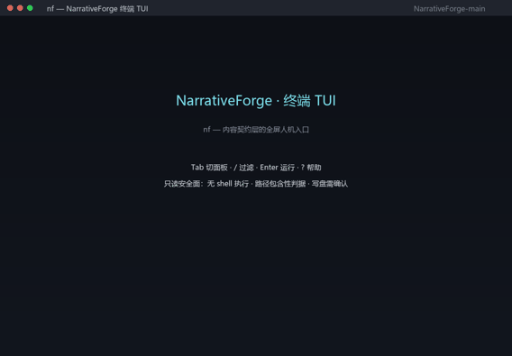

宁封子（NinFenz，简称 NF）是内容契约层（content contract layer）：把「AI 稳定产出长内容」变成工程。协议本体域中立、模型无关；叙事只是官方第一个域包。
不是模型 · 不是提示词模板集 · 不是某厂商 SDK · MIT · 可离线
客户端 AI（零安装）：让它读 /nf.txt 并按它执行。装载指令 = 三条铁律 + 分支表 + 取件基底；读不动链接就把要点整段粘过去。
agent（在本地跑通整个项目）：按 /agent.txt 执行 —— clone → python scripts/nf.py doctor（16/16 通过）→ bash verify.sh（check1-40，PASS=72）。一键：curl -fsSL https://ninfenz.dev/run.sh | sh（默认只读；--full 跑全量门禁）。
MCP 客户端（已有本地检出）：python scripts/nf.py serve —— 只读 MCP，检索与取件，无写路径。
细节与一键复制块：让 AI 用起来 · 一次读全：/llms-full.txt · 机读事实：/facts.json · 清单：/llms.txt
是：一套协议（module / pipeline / asset）+ 一个确定性门禁入口 + 一份可复算的资产台账，全部是纯 markdown 与 JSON，放在 git 里。
不是：不是模型、不是提示词集合、不是 SDK。门禁管结构与可复现，不管文笔好坏——这条边界是设计的一部分。
bash verify.sh。nf serve），双协议版本 2026-07-28 / 2025-11-25。python tui/nf.py（纯标准库全屏 TUI）。同一组事实的机读形态：/facts.json（每条带真源与落地锚点）· 标准目录导出 protocol/geo_export.json（370 条逐条带可达性与探针日期）
# 完整项目（唯一需要 clone 的路径）
git clone https://github.com/Monyeah777/NinFenz
cd NinFenz
python scripts/nf.py doctor # 只读体检：16/16 通过
bash verify.sh # check1-40 全量门禁：PASS=72 WARN=0 FAIL=0
# 人机全屏终端（纯标准库、离线）
python tui/nf.py
# agent 一键引导（默认只读体检；--full 追加全量门禁）
curl -fsSL https://ninfenz.dev/run.sh | sh前置：Python ≥ 3.11（纯标准库，无 pip 依赖）；Node ≥ 18.17（仅 npm 免 clone 路径需要）。npm 包（包名 ninfenz）已备好但尚未公开发布——发布后 npx -y ninfenz doctor / npx -y ninfenz tui 可用。国内镜像：gitee.com/monyeah777/ninfenz。
终端 TUI（纯标准库、离线；9 秒演示）：

| 提示词模板集 | 宁封子 NinFenz | |
|---|---|---|
| 交付物 | 一段文本 | 协议 + 门禁 + 资产台账 |
| 第二次产出 | 结构随机 | 与首次同构（有基线可 diff） |
| 判合格 | 靠人看 | check1-40 确定性检查 + 冻结基线 |
| 可验证 | 无 | Merkle inclusion proof + 签名锚，fail-closed |
| 边界 | — | 管结构与可复现，不管文笔好坏 |
取自《列仙传》：宁封子是黄帝的陶正——生料入窑，经火候与封缄，出的是耐久的成品。火候对应确定性门禁，封对应封缄验信（Merkle 证明 + 签名锚）。英文品牌名 NinFenz 是它的压缩形式，简称 NF。
考据说明：「封」在原典里来自葬于宁北山（封土）；此处取「封」字的封缄/验信义。
内容契约层：用协议 + 确定性门禁 + 可验证产物定义「AI 稳定产出长内容」，使产出可装载、可质检、可复现。
不是。协议本体模型无关，任何能读文本的 AI 都能按协议装配与装载。
模板只给文本；NinFenz 给协议 + 可核验门禁 + 资产台账，产出可被判合格与否。
不必。仓库即 markdown 源件，bash verify.sh 只读本地，可离线运行。
可。产物带 Merkle inclusion proof（RFC 6962）与可选的 hmac / ssh-sig / sigstore 锚；缺验证器时 fail-closed，不静默通过。
让客户端读 /nf.txt 并按它执行（不装任何东西）；有本地检出时改走只读 MCP：python scripts/nf.py serve。三种接法的细节见 让 AI 用起来。
用 Gitee 镜像 gitee.com/monyeah777/ninfenz，或直接用本站机器面——本站托管在 Cloudflare，国内可直连（*.workers.dev 不行，自定义域可以）。
MIT，无付费版、无托管服务。
宁封子（NinFenz，简称 NF）是内容契约层（content contract layer）：用「协议 + 确定性门禁 + 可验证产物」把「AI 稳定产出长内容」变成可装载、可质检、可复现的工程；协议本体域中立、模型无关，叙事只是官方第一个域包。
纯文本：NinFenz（NF）— 内容契约层，Monyeah777，MIT，https://github.com/Monyeah777/NinFenz
APA：Monyeah777. (2026). NinFenz (宁封子): a content contract layer [Computer software]. MIT. https://ninfenz.dev/
BibTeX：
@software{ninfenz,
title = {NinFenz (宁封子) - content contract layer},
author = {Monyeah777},
year = {2026},
url = {https://ninfenz.dev/},
license = {MIT}
}机读引用元数据：仓库根 CITATION.cff · 三种形态同见 /llms-full.txt 第八节。引用请指向 canonical 站点或仓库，并保持定义句逐字一致；量化事实请引 /facts.json，别手抄数字（会过期）。